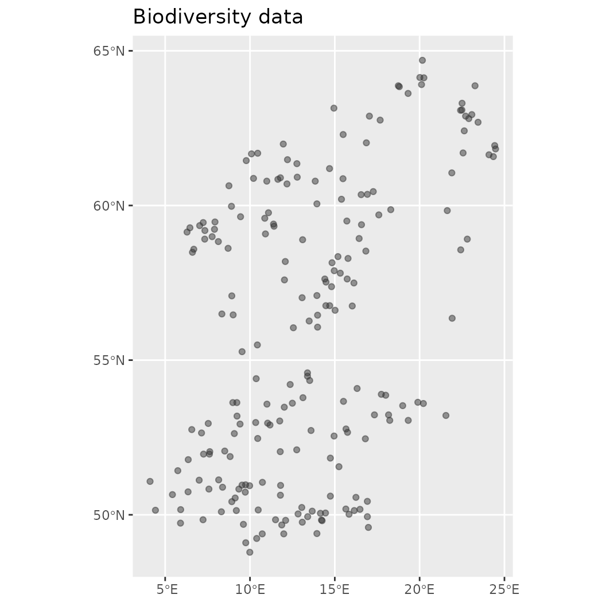

Train a basic model
Martin Jung
2023-03-11
Source:vignettes/articles/01_train_simple_model.Rmd
01_train_simple_model.RmdThe examples below demonstrate how to fit a basic model with the ibis.iSDM package using a variety of engines. The ibis.iSDM package loosely follows the tidyverse strategy where a model is built by adding different components via pipes. Every model needs to have a minimum of at least 3 components:
A background layer that delineates the modelling extent. This layer can be supplied as
sforRasterLayerobject and provides the package with general knowledge about the modelling extent, the geographic projection and grain size as well as areas with no (NA) and valid data range (1or other values).Spatial-explicit biodiversity distribution data such as point or polygon data on species or ecosystems. Methods to add those are available in functions that start with [
add_biodiversity_*] can be of various types. Types in this context refer to the form the biodiversity data was raised, such as presence-only or presence-absence information. There are ways to convert for instance presence-onlyA engine to do the estimation. Like many other species distribution modelling approaches, the ibis.iSDM package makes use of Bayesian and Machine Learning approaches to do the estimation. While writing this text the package supports a total of 7 (
length(getOption("ibis.engines") )) different engines, each with their own modelling approaches.
Load package and make a basic model
#> inlabru xgboost rgeos igraph
#> TRUE TRUE TRUE TRUE
# Load the package
library(ibis.iSDM)
library(inlabru)
library(xgboost)
library(raster)
library(rgdal)
library(uuid)
library(assertthat)Creating a model in the ibis.iSDM package is relatively
straight forward which we demonstrate here with some of testdata that
come with the package. These data show the distribution of a simulated
forest-associated species for northern Europe. There are also some test
predictors available for modelling. So first lets load the data:
# Background layer
background <- raster::raster(system.file("extdata/europegrid_50km.tif",package = "ibis.iSDM", mustWork = TRUE))
# Load virtual species points
virtual_species <- sf::st_read(system.file("extdata/input_data.gpkg",package = "ibis.iSDM", mustWork = TRUE), "points")
#> Reading layer `points' from data source
#> `/home/runner/work/_temp/Library/ibis.iSDM/extdata/input_data.gpkg'
#> using driver `GPKG'
#> Simple feature collection with 208 features and 5 fields
#> Geometry type: POINT
#> Dimension: XY
#> Bounding box: xmin: 4.109162 ymin: 48.7885 xmax: 24.47594 ymax: 64.69323
#> Geodetic CRS: WGS 84
# Predictors
predictors <- raster::stack(list.files(system.file("extdata/predictors/", package = "ibis.iSDM", mustWork = TRUE), "*.tif",full.names = TRUE))
# Make use only of a few of them
predictors <- subset(predictors, c("bio01_mean_50km","bio03_mean_50km","bio19_mean_50km",
"CLC3_112_mean_50km","CLC3_132_mean_50km",
"CLC3_211_mean_50km","CLC3_312_mean_50km",
"elevation_mean_50km"))For our example model we are going to use ‘Integrated Nested Laplace
approximation (INLA)’ modelling framework as available through the
INLA and inlabru packages. Both have been
implemented separately in the ibis.iSDM package, but especially when
dealing with future scenarios the use of the inlabru
package is advised.
Now lets build a simple model object. In this case we make use of
presence-only biodiversity records
(add_biodiversity_poipo). Any presence-only records added
to an object created through distribution() are by default
modelled as intensity \(\lambda\)
through an inhomogeneous Poisson point proccess model (PPM), where the
Number of Individuals \(N\) is
integrated as relative rate of occurrence per unit area: \(N_i \sim Poisson(\lambda_i|A_i)\). Here
\(\lambda\) can then be estimated by
relating it to environmental covariates \(log(\lambda_i) = \alpha + \beta(x_i)\),
where \(i\) is a grid cell.
It is inhomogeneous since the \(lambda\) varies over the whole sampling extent. In the context of species distribution modelling PPMs are structurally similar to the popular Maxent modelling framework (see Renner & Warton 2013 and Renner et al. 2015. Critically, presence-only records can only give an indication of a biased sampling and thus sampling bias has to be taken somehow into account, either through careful data preparation, apriori thinning or model-based control by including covariates \(\sigma_i\) that might explain this sampling bias.
# First we define a distribution object using the background layer
mod <- distribution(background)
#> [Setup] 2023-03-11 11:24:21 | Creating distribution object...
# Then lets add species data to it.
# This data needs to be in sf format and key information is that
# the model knows where occurrence data is stored (e.g. how many observations per entry) as
# indicated by the field_occurrence field.
mod <- add_biodiversity_poipo(mod, virtual_species,
name = "Virtual test species",
field_occurrence = "Observed")
#> [Setup] 2023-03-11 11:24:21 | Adding poipo dataset...
# Then lets add predictor information
# Here we are interested in basic transformations (scaling), but derivates (like quadratic)
# for now, but check options
mod <- add_predictors(mod,
env = predictors,
transform = "scale", derivates = "none")
#> [Setup] 2023-03-11 11:24:21 | Adding predictors...
#> [Setup] 2023-03-11 11:24:21 | Transforming predictors...
# Finally define the engine for the model
# This uses the default data currently backed in the model,
# !Note that any other data might require an adaptation of the default mesh parameters used by the engine!
mod <- engine_inlabru(mod)
# Print out the object to see the information that is now stored within
print(mod)
#> <Biodiversity distribution model>
#> Background extent:
#> xmin: -16.064, xmax: 36.322,
#> ymin: 34.95, ymax: 71.535
#> projection: +proj=longlat +datum=WGS84 +no_defs
#> ---------
#> Biodiversity data:
#> Point - Presence only <208 records>
#> ---------
#> predictors: bio01_mean_50km, bio03_mean_50km, bio19_mean_50km, ... (8 predictors)
#> priors: <Default>
#> latent: None
#> log: <Console>
#> engine: <INLABRU>The print call at the end now shows some summary
statistics contained in this object, such as the extent of the modelling
background and the projection used, the number of biodiversity datasets
added and statistics on the predictors, eventual priors and which engine
is being used.
Of course all of these steps can also be done in “pipe” using the
%>% or |> syntax.
print("Create model")
#> [1] "Create model"
mod <- distribution(background) %>%
add_biodiversity_poipo(virtual_species,
name = "Virtual test species",
field_occurrence = "Observed") %>%
add_predictors(env = predictors, transform = "scale", derivates = "none") %>%
engine_inlabru()
#> [Setup] 2023-03-11 11:24:22 | Creating distribution object...
#> [Setup] 2023-03-11 11:24:22 | Adding poipo dataset...
#> [Setup] 2023-03-11 11:24:23 | Adding predictors...
#> [Setup] 2023-03-11 11:24:23 | Transforming predictors...Also very helpful to know is that this object contains a number of helper functions that allow easy summary or visualization of the contained data. For example, it is possible to plot and obtain any of the data added to this object.
# Make visualization of the contained biodiversity data
plot(mod$biodiversity)
# Other options to explore
names(mod)
#> [1] ".super" "set_predictors"
#> [3] "get_predictor_names" "set_priors"
#> [5] "rm_predictors" "rm_offset"
#> [7] "set_engine" "rm_engine"
#> [9] "set_log" "log"
#> [11] "show_biodiversity_length" "summary"
#> [13] "set_biodiversity" "rm_biascontrol"
#> [15] "get_projection" "bias"
#> [17] "get_biodiversity_equations" "show_biodiversity_equations"
#> [19] "plot_offsets" "get_limits"
#> [21] "rm_limits" "get_priors"
#> [23] "latentfactors" "plot_bias"
#> [25] "limits" "rm_priors"
#> [27] "get_latent" "set_offset"
#> [29] "set_latent" "offset"
#> [31] "print" ".that"
#> [33] "get_engine" "name"
#> [35] "engine" "show"
#> [37] "get_biascontrol" "set_biascontrol"
#> [39] "get_resolution" "show_background_info"
#> [41] "set_limits" "get_extent_dimensions"
#> [43] "priors" "predictors"
#> [45] "get_prior_variables" "get_biodiversity_types"
#> [47] "get_offset" "background"
#> [49] "get_extent" "plot"
#> [51] "rm_latent" "get_log"
#> [53] "biodiversity"Now finally the model can be estimated using the supplied engine. The
train function has many available parameters that affect
how the model is being fitted. Unless not possible, the default way is
fitting a linear model based on the provided engine and biodiversity
data types.
print("Fit model")
#> [1] "Fit model"
# Finally train
fit <- train(mod,
runname = "Test INLA run",
verbose = FALSE # Don't be chatty
)
#> [Estimation] 2023-03-11 11:24:23 | Collecting input parameters.
#> [Estimation] 2023-03-11 11:24:23 | Adding engine-specific parameters.
#> [Estimation] 2023-03-11 11:24:24 | Engine setup.
#> [Estimation] 2023-03-11 11:24:25 | Starting fitting.
#> [Estimation] 2023-03-11 11:24:30 | Starting prediction.
#> [Done] 2023-03-11 11:24:43 | Completed after 20.09 secsSummarizing and plotting the fitted distribution object
As before the created distribution model object can be visualized and interacted with.
-
print()outputs the model, inherent parameters and whether any predictions are contained within. -
summary()creates a summary output of the contained model. -
plot()makes a visualization of prediction over the background -
effects()visualizes the effects, usually the default plot through the package used to fit the model.
# Plot the mean of the posterior predictions
plot(fit, "mean")
# Print out some summary statistics
summary(fit)
#> # A tibble: 9 × 8
#> variable mean sd q05 q50 q95 mode kld
#> <chr> <dbl> <dbl> <dbl> <dbl> <dbl> <dbl> <dbl>
#> 1 Intercept -2.29 0.128 -2.50 -2.29 -2.08 -2.29 0
#> 2 bio01_mean_50km -0.00257 0.173 -0.287 -0.00257 0.281 -0.00257 0
#> 3 bio03_mean_50km -0.501 0.163 -0.769 -0.501 -0.234 -0.501 0
#> 4 bio19_mean_50km 0.462 0.115 0.273 0.462 0.650 0.462 0
#> 5 CLC3_112_mean_50km 0.426 0.0691 0.312 0.426 0.539 0.426 0
#> 6 CLC3_132_mean_50km 0.0322 0.0626 -0.0708 0.0322 0.135 0.0322 0
#> 7 CLC3_211_mean_50km 0.801 0.105 0.629 0.801 0.973 0.801 0
#> 8 CLC3_312_mean_50km 0.982 0.0904 0.833 0.982 1.13 0.982 0
#> 9 elevation_mean_50km -0.0370 0.119 -0.233 -0.0370 0.159 -0.0370 0
# Show the default effect plot from inlabru
effects(fit)
See the reference and help pages for further options including
calculating a threshold(), partial() or
similarity() estimate of the used data.
# To calculate a partial effect for a given variable
o <- partial(fit, x.var = "CLC3_312_mean_50km", plot = TRUE)
# The object o contains the data underlying this figure
# Similarly the partial effect can be visualized spatially as 'spartial'
s <- spartial(fit, x.var = "CLC3_312_mean_50km")
#> Warning in points2grid(points, tolerance, round): grid has empty column/rows in
#> dimension 1
plot(s[[1]], col = rainbow(10), main = "Marginal effect of forest on the relative reporting rate")
It is common practice in species distribution modelling that
resulting predictions are thresholded, e.g. that an abstraction
of the continious prediction is created that separates the background
into areas where the environment supporting a species is presumably
suitable or non-suitable. Threshold can be used in ibis.iSDM via the
threshold() functions suppling either a fitted model, a
RasterLayer or a Scenario object.
# Calculate a threshold based on a 50% percentile criterion
fit <- threshold(fit, method = "percentile", value = 0.5)
# Notice that this is now indicated in the fit object
print(fit)
#> Trained INLABRU-Model (Test INLA run)
#> Strongest summary effects:
#> Positive: CLC3_312_mean_50km, CLC3_211_mean_50km, bio19_mean_50km, ... (5)
#> Negative: bio01_mean_50km, elevation_mean_50km, bio03_mean_50km, Intercept (4)
#> Prediction fitted: yes
#> Threshold created: yes
# There is also a convenient plotting function
fit$plot_threshold()
# It is also possible to use truncated thresholds, which removes non-suitable areas
# while retaining those that are suitable. These are then normalized to a range of [0-1]
fit <- threshold(fit, method = "percentile", value = 0.5, format = "normalize")
fit$plot_threshold()
For more options for any of the functions please see the help pages!
Validation of model predictions
The ibis.iSDM package provides a convenience function to obtain validation results for the fitted models. Validation can be done both for continious and discrete predictions, where the latter requires a computed threshold fits (see above).
Here we will ‘validate’ the fitted model using the data used for model fitting. For any scientific paper we recommend to implement a cross-validation scheme to obtain withheld data or use independently gathered data.
# By Default validation statistics are continuous and evaluate the predicted estimates against the number of records per grid cell.
fit$rm_threshold()
validate(fit, method = "cont")
#> [Validation] 2023-03-11 11:24:50 | Validating model with non-independent training data. Results can be misleading!
#> [Validation] 2023-03-11 11:24:50 | Calculating validation statistics
#> modelid name method
#> 1 5df89a08-f413-458a-bbe6-96384c666a06 Virtual test species continuous
#> 2 5df89a08-f413-458a-bbe6-96384c666a06 Virtual test species continuous
#> 3 5df89a08-f413-458a-bbe6-96384c666a06 Virtual test species continuous
#> 4 5df89a08-f413-458a-bbe6-96384c666a06 Virtual test species continuous
#> 5 5df89a08-f413-458a-bbe6-96384c666a06 Virtual test species continuous
#> 6 5df89a08-f413-458a-bbe6-96384c666a06 Virtual test species continuous
#> metric value
#> 1 n 174.00000000
#> 2 rmse 0.87166827
#> 3 mae 0.66391810
#> 4 logloss 1.71422831
#> 5 normgini -0.09925807
#> 6 cont.boyce 0.26650024
# If the prediction is first thresholded, we can calculate discrete validation estimates (binary being default)
fit <- threshold(fit, method = "percentile", value = 0.5, format = "binary")
validate(fit, method = "disc")
#> [Validation] 2023-03-11 11:24:51 | Validating model with non-independent training data. Results can be misleading!
#> [Validation] 2023-03-11 11:24:51 | Calculating validation statistics
#> [Validation] 2023-03-11 11:24:51 | No absence data found for threshold. Generating random points.
#> modelid name method
#> 1 5df89a08-f413-458a-bbe6-96384c666a06 Virtual test species discrete
#> 2 5df89a08-f413-458a-bbe6-96384c666a06 Virtual test species discrete
#> 3 5df89a08-f413-458a-bbe6-96384c666a06 Virtual test species discrete
#> 4 5df89a08-f413-458a-bbe6-96384c666a06 Virtual test species discrete
#> 5 5df89a08-f413-458a-bbe6-96384c666a06 Virtual test species discrete
#> 6 5df89a08-f413-458a-bbe6-96384c666a06 Virtual test species discrete
#> 7 5df89a08-f413-458a-bbe6-96384c666a06 Virtual test species discrete
#> 8 5df89a08-f413-458a-bbe6-96384c666a06 Virtual test species discrete
#> 9 5df89a08-f413-458a-bbe6-96384c666a06 Virtual test species discrete
#> 10 5df89a08-f413-458a-bbe6-96384c666a06 Virtual test species discrete
#> 11 5df89a08-f413-458a-bbe6-96384c666a06 Virtual test species discrete
#> 12 5df89a08-f413-458a-bbe6-96384c666a06 Virtual test species discrete
#> 13 5df89a08-f413-458a-bbe6-96384c666a06 Virtual test species discrete
#> metric value
#> 1 n 522.0000000
#> 2 auc 0.6824713
#> 3 overall.accuracy 0.7432950
#> 4 true.presence.ratio 0.3936652
#> 5 precision 0.6492537
#> 6 sensitivity 0.5000000
#> 7 specificity 0.8649425
#> 8 tss 0.3649425
#> 9 f1 0.5649351
#> 10 logloss 6.0131677
#> 11 expected.accuracy 0.5810983
#> 12 kappa 0.3871951
#> 13 brier.score 0.2567050Validating integrated SDMs, particular those fitted with multiple likelihoods is challenging and something that has not yet fully been explored in the scientific literature. For example strong priors can substantially improve by modifying the response functions in the model, but are challenging to validate if the validation data has similar biases as the training data. One way such SDMs can be validated is through spatial block validation, where however care needs to be taken on which datasets are part of which block.
Constrain a model in prediction space
Species distribution models quite often extrapolate to areas in which the species are unlikely to persist and thus are more likely to predict false presences than false absences. This “overprediction” can be caused by multiple factors from true biological constraints (e.g. dispersal), to the used algorithm trying to be clever by overfitting towards complex relationships (In the machine learning literature this problem is commonly known as the bias vs variance tradeoff).
One option to counter this to some extent in SDMs is to add spatial
constraints or spatial latent effects. The underlying
assumption here is that distances in geographic space can to some extent
approximate unknown or unquantified factors that determine a species
range. Other options for constrains is to integrate additional data
sources and add parameter constraints (see [integrate_data]
vignette).
Currently the ibis.iSDM package supports the addition of
only spatial latent effects via add_latent_spatial(). See
the help file for more information. Note that not every spatial term
accounts for spatial autocorrelation, some simply add the distance
between observations as predictor (thus assuming that much of the
spatial pattern can be explained by commonalities in the sampling
process).
# Here we are going to use the xgboost algorithm instead and set as engine below.
# We are going to fit two separate Poisson Process Models (PPMs) on presence-only data.
# Load the predictors again
predictors <- raster::stack(list.files(system.file("extdata/predictors/", package = "ibis.iSDM"), "*.tif",full.names = TRUE))
predictors <- subset(predictors, c("bio01_mean_50km","bio03_mean_50km","bio19_mean_50km",
"CLC3_112_mean_50km","CLC3_132_mean_50km",
"CLC3_211_mean_50km","CLC3_312_mean_50km",
"elevation_mean_50km",
"koeppen_50km"))
# One of them (Köppen) is a factor, we will now convert this to a true factor variable
predictors$koeppen_50km <- raster::ratify(predictors$koeppen_50km)
# Create a distribution modelling pipeline
x <- distribution(background) %>%
add_biodiversity_poipo(virtual_species, field_occurrence = 'Observed', name = 'Virtual points') |>
add_predictors(predictors, transform = 'scale', derivates = "none") |>
engine_xgboost(iter = 8000)
#> [Setup] 2023-03-11 11:24:52 | Creating distribution object...
#> [Setup] 2023-03-11 11:24:52 | Adding poipo dataset...
#> [Setup] 2023-03-11 11:24:52 | Adding predictors...
#> [Setup] 2023-03-11 11:24:52 | Transforming predictors...
# Now train 2 models, one without and one with a spatial latent effect
mod_null <- train(x, runname = 'Normal PPM projection', only_linear = TRUE, verbose = FALSE)
#> [Estimation] 2023-03-11 11:24:52 | Collecting input parameters.
#> [Estimation] 2023-03-11 11:24:52 | Adding engine-specific parameters.
#> [Estimation] 2023-03-11 11:24:52 | Engine setup.
#> [Estimation] 2023-03-11 11:24:52 | Starting fitting: Virtual points
#> [Estimation] 2023-03-11 11:25:10 | Starting prediction...
#> [Done] 2023-03-11 11:25:10 | Completed after 17.49 secs
# And with an added constrain
# Calculated as nearest neighbour distance (NND) between all input points
mod_dist <- train(x %>% add_latent_spatial(method = "nnd"),
runname = 'PPM with NND constrain', only_linear = TRUE, verbose = FALSE)
#> [Setup] 2023-03-11 11:25:10 | Adding latent spatial terms...
#> [Estimation] 2023-03-11 11:25:10 | Collecting input parameters.
#> [Estimation] 2023-03-11 11:25:12 | Adding engine-specific parameters.
#> [Estimation] 2023-03-11 11:25:12 | Engine setup.
#> [Estimation] 2023-03-11 11:25:12 | Starting fitting: Virtual points
#> [Estimation] 2023-03-11 11:25:30 | Starting prediction...
#> [Done] 2023-03-11 11:25:30 | Completed after 20.29 secs
# Compare both
plot(background, main = "Biodiversity data"); plot(virtual_species['Observed'], add = TRUE)
plot(mod_null)
plot(mod_dist) Another option for constraining a prediction is to place concrete limits
on the prediction surface. This can be done by adding a
Another option for constraining a prediction is to place concrete limits
on the prediction surface. This can be done by adding a
factor zone layer to the distribution object. Internally,
it is then assessed in which of the ‘zones’ any biodiversity
observations fall, discarding all others from the prediction. This
approach can be particular suitable for current and future projections
at larger scale using for instance a biome layer as stratification. It
assumes that it is rather unlikely that species distributions shift to
different biomes entirely, for instance because of dispersal or
eco-evolutionary constraints. Note that this approach
effectively also limits the prediction background / output!
# Create again a distribution object, but this time with limits (use the Köppen-geiger layer from above)
# The zones layer must be a factor layer (e.g. is.factor(layer) )
x <- distribution(background, limits = predictors$koeppen_50km) %>%
add_biodiversity_poipo(virtual_species, field_occurrence = 'Observed', name = 'Virtual points') |>
add_predictors(predictors, transform = 'scale', derivates = "none") |>
# Since we are adding the koeppen layer as zonal layer, we disgard it from the predictors
rm_predictors("koeppen_50km") %>%
engine_xgboost(iter = 3000, learning_rate = 0.01)
#> [Setup] 2023-03-11 11:25:31 | Creating distribution object...
#> [Setup] 2023-03-11 11:25:32 | Adding poipo dataset...
#> [Setup] 2023-03-11 11:25:32 | Adding predictors...
#> [Setup] 2023-03-11 11:25:32 | Transforming predictors...
# Spatially limited prediction
mod_limited <- train(x, runname = 'Limited prediction background', only_linear = TRUE, verbose = FALSE)
#> [Estimation] 2023-03-11 11:25:33 | Collecting input parameters.
#> [Estimation] 2023-03-11 11:25:33 | Adding engine-specific parameters.
#> [Estimation] 2023-03-11 11:25:33 | Engine setup.
#> [Estimation] 2023-03-11 11:25:33 | Starting fitting: Virtual points
#> [Estimation] 2023-03-11 11:25:37 | Starting prediction...
#> [Done] 2023-03-11 11:25:37 | Completed after 4.42 secs
# Compare the output
plot(mod_limited)